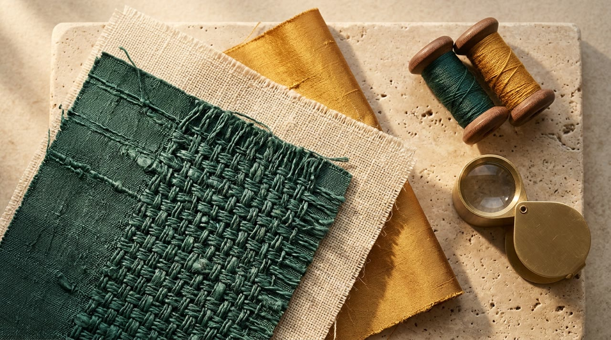
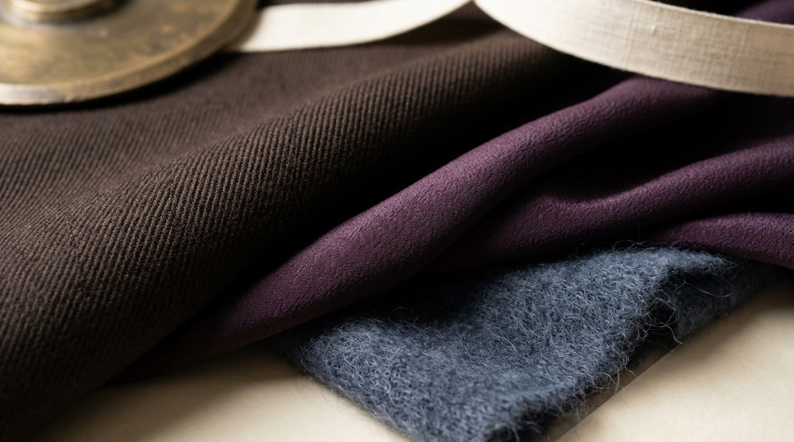

KURTARILAN FİNAL · 0 #000000 · WEBGL1 + 8D WEBAUDIO
Kumaşına dokun. 8D sesi duy.
PANTONE 19-5420 TCX · Gece Zümrüdü
8D Sürreal: Kapalı
8D Ses: Kapalı
Kurtarılan Gerçek Makro Kumaş Levhaları (Yerel ./ Dosyalar)

